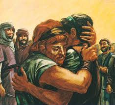

Home Quiz
Shadowland: Beginnings: Week 38
The Reunion - Genesis 33
God gave Jacob, "conniver", a new name, Israel, "God rules". But in
the very next verse, he is still Jacob! Jacob is unique in Scripture in
that he is not called by his new name from that point on. His misadventures
are presented to us for our instruction, and his waffling between acting
like "Jacob" or "Israel" mirrors our own struggle between the flesh and
the Spirit. After he receives the name Israel, you can assume that he
is "walking in the flesh" when he is called "Jacob", and "walking in the
Spirit" when he is called "Israel".
Having just moments ago wrestled with God in the flesh, received his new
name and blessing, and been permanently injured to force him to lean on
something other than himself, "Jacob" now goes right back to leaning (rather
lamely) on himself.

- 33:1 Jacob's test of faith comes immediately after his
encounter with God.
- 33:2 Jacob's favoritism did not begin with Joseph's coat. It
is painfully obvious here.
- 33:4 Jacob prayed for God to help him, and God answered, speaking
to Esau. We are not told exactly what God told Esau, but we
can infer some of it. God gave him an inheritance in Caanan
along with Lot. (Deuteronomy 2:5,19) God had already blessed
him with the substance of what Isaac intended to bless him with.
(33:9)
- 33:8 Jacob now proceeds to finalize the sale of the birthright back
to Esau. Esau sold his birthright for some "red stuff" to save his
life when he was dying from hunger (or thought he was). Jacob
sells the birthright back to Esau to save his life because he was in
danger from the sword of Esau (or thought he was).
- 33:11 One of the ways con men entice people to take them into
confidence is with the giving of gifts.
- 33:12 God told Jacob to go home, and God dealt with Esau's emnity -
as indeed Jacob implored Him to in the first recorded prayer.
Esau offers his protection to Jacob as they return home together.
- 33:13 But Jacob refuses to believe that God has dealt lastingly
with Esau's anger, and tells Esau he has to come slowly because of the
cattle and children. This is a lie. Well, a half truth along
the lines of Abram and Isaac and their "sisters".
- 33:14 Jacob tells Esau he will meet him in Seir. Another lie.
- 33:15 Again, Esau offers to leave some of his armed men as protection,
but Jacob has other ideas.
- 33:16 As with Abram and Isaac with Abimelech, Jacob the ancestor of Christ
looks really bad compared to Esau.
- 33:17 Having told Esau he would meet him in Seir, to the Southeast,
Jacob now travels Northwest - in contradiction to his
promise to Esau and in direct disobedience to God's instruction to
return to his kindred (Genesis 31:3) As with Abram and Isaac, Jacob
lies to a king of this world, and is an embarassment. As with Abram
and Isaac, his direct disobedience will have dire consequences in the
next chapter. It will also lead to the early death of Rachel as
circumstances force him to go home at last like God told him to - while
Rachel is great with child.
- 33:20 Jacob is not only disobedient, but presumptious, calling
the altar "God, the God of Israel". God is not pleased,
having to reiterate, "Go to *Bethel* and build an altar
like I told you."